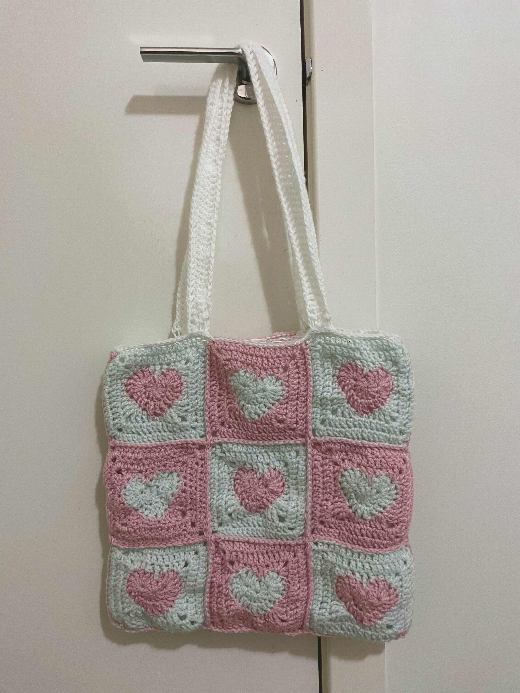
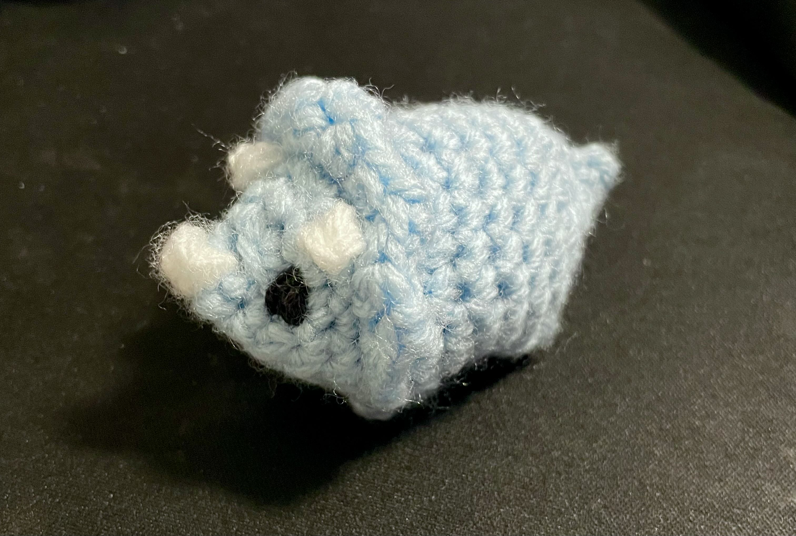

I've completed comp courses 1511, 1521, 1531, 2521, 2041, and 3311.
My list of projects include...- This website
- Spreading joy and whimsy
- Generally being a silly guy
- ...yes I have no comp-related projects. :(
But I am looking forward to put something together in this trainee program, if I (maybe) manage to make it in!
Anyway, while I have nothing spectacular to show off coding-wise, I can at least show you that I can commit to finishing something. Here's one of my crochet projects.
This is a tote bag I crochetted using this pattern! I worked on it over a couple months. Oh, and I also like to make little amigurumi plushies, so here's a triceratops.
